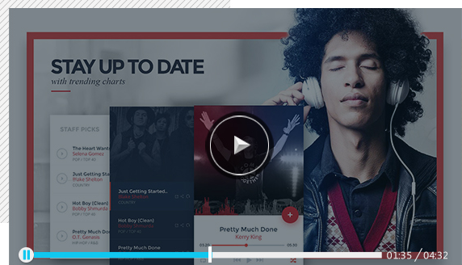
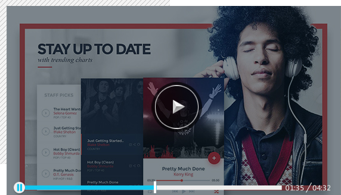

经过这段时司团队和自己的努力，爱食记项目总算告一段落。此次项目付出了我们团队每个人的 努力，所以首先要感谢团队兄弟姐妹的幸苦付出。下面介绍一下我们本次项目的制作流程。
爱宦记，是一个美售推荐软件可以提供给广大用户在饭店选择美宦时可以有一个很好的推荐，而 且会根据地区推荐不同地区的美食用户也可以向好友或者别的用户推荐自己吃过的美食。
我们在尚信，QQ，新浪微博等社交平台共发放了150份问卷调查，回收的有效司卷为100份，其中 对我们的产品表示感兴趣的年龄段大部分都处于18-30岁的年轻人，占了10%份，其中对我们的产 品表示感兴趣的年龄段大部分都处于18-30岁的 年轻人，占了19%的比例。而且他们关注的重点是 软件的简易操作。
好了解，信息的准确，和对朋友的分享的比例，而且他们关注的重点是软件的简易操作。好了解 信息的准确，和对朋友的分享这方面。
视频介绍
 
